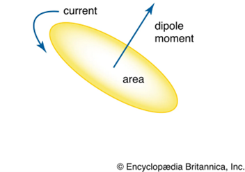
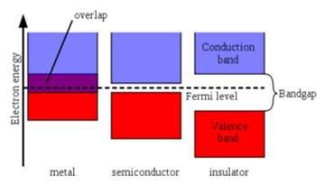
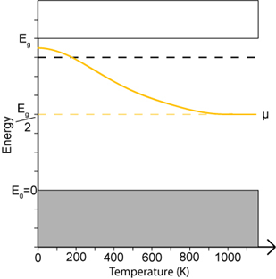
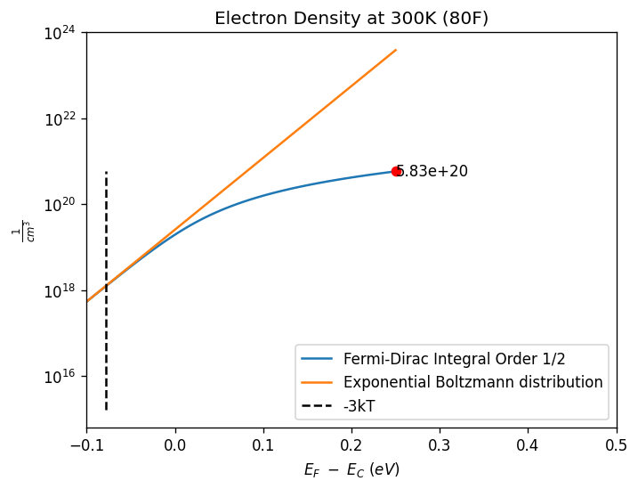
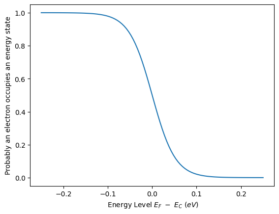
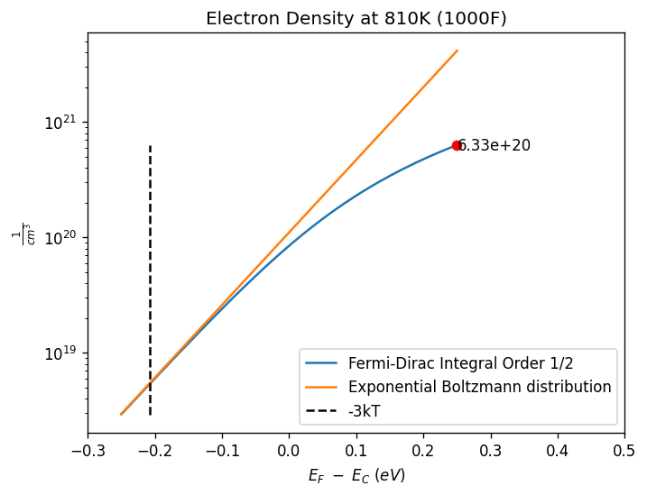
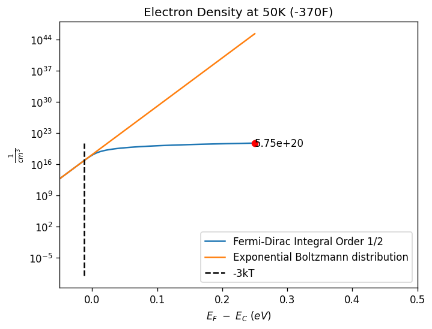

Electron Concentration via Fermi-Dirac Integral order 1/2#
Independenty Study Spring 2023
C. Doll
The Fermi-Dirac integral describes the behavior of fermions within a system. Fermion particles are composed of a charge, mass, and spin. The spin of fermion particles induces angular momentum, which creates a small magnetic dipole.

All fermions have a spin value of ½ which can be described as spin up or spin down. This non integer spin adds constraint to a system with more than one fermion because no two electrons can have the same set of quantum numbers and is also why only two electrons can occupy each energy level – one spin up, one spin down. This is known as the Pauli exclusion principle. The Fermi-Dirac distribution models the probability of electron states of certain energies and temperature.
Where E is the state of energy, μ is the chemical potential or the Fermi energy at the highest occupied state, k_B is the Boltzmann’s constant, and T is temperature in Kelvin.
A distribution can be graphed, and thermodynamic properties can be obtained as a result of the Fermi-Dirac distribution. In the case of semiconductors, a pure semiconductor at a finite temperature will always have a Fermi energy between the valence and conduction band.

However, the Fermi energy of extrinsic semiconductors is dictated heavily by temperature and the type of added ions. An extrinsic semiconductor is when Impurities are introduced intentionally to modulate the electrical, optical, or structural properties of the semiconductor changing the location of the Fermi energy level.
There are two types of extrinsic semiconductors, n-type and p-type. N-type describes a pure silicon having a group V element added or doped, such as phosphorus, so that the Fermi level moves closer to the conduction band because a greater number of electrons are now present and more readily jump the gap into the conduction band. P-type semiconductors are when group III elements, like aluminum, are added to pure silicon, reducing the number of available electrons and the Fermi level drops closer to the valence band decreasing the flow of electrons across the band gap.
The band gap in semiconductors has thermally excited electrons jump from the valence band to the conduction band, creating an electron hole pair in the valence band which subsequently creates a net momentum. Photons may also jump this band if their energy level is sufficient to cover the band gap distance.

The density of state of an electron, which describes the density of electrons and the electron pair holes per unit volume, must be combined with the Fermi-Dirac distribution to acquire the distribution of elections and electron pair holes on the leading edge of the valance band or the leading edge of the conduction band. The density of state equation for the valence band is as follows.
Where \(M_p\) is the effective mass of the carriers, \(E_v\) is the valence band energy, \(E\) is the energy of the state, and \(ℏ\) is Planck’s reduced constant \((\frac{h}{2π})\).
And the equation for the density of state for the conduction band is:
Where \(M_n\) is the effective mass of carriers, \(E_c\) is the conduction band energy, \(E\) is the energy of the state, and \(ℏ\) is Planck’s reduced constant \((\frac{h}{2π})\).
When the Fermi-Dirac and DoS equations are multiple together a carrier distribution is formed. This tells us the distribution of electrons in either the conduction band or the valence band. Knowing the number of carriers can help determine the amount of current flow in the semiconductor. Carriers are defined as either an electron or an electron pair hole in a semiconductor.
To compute the thermal equilibrium electron density an integration needs to occur between the edge of the conduction band to the top of the conduction band and multiplying equation (1) and equation (2) will yield:
An assumption was made here by introducing infinity to represent the top of the conduction band because the Fermi-Dirac distribution trends to zero as it approaches the top of the conduction band. This assumption allows for the normalization of the Fermi-Dirac integral with respect to the conduction band edge. By setting \(ε = \frac{E - E_c}{k_B T}, \quad \eta_c = \frac{E_F - E_c}{k_B T}\), the Fermi-Dirac integral to the ½ order is created.
Rewritten into a simpler form:
Where \(N_C = 2\left(\frac{2\pi M_n k_B T}{h^2}\right)^{3/2}\).
The modified Fermi-Dirac to the ½ order integral is expressed as such and incorporates \(((\frac{h}{2π}))\) into the \(F_(1⁄2)\) function:
The Fermi-Dirac integral to the ½ order is used to express the electron density in the conduction band. The F-D ½ is used when the Fermi energy level is less than \(3k_B T\) away from the conduction band and can be used to calculate the hole density, electron density, and Einstein relation. The subject of this paper will be an undergraduate approach to modeling the Fermi-Dirac integral to the ½ order.
In order to express the Fermi-Dirac integral it needs to be expressed in a way that can be understood by Python. The polylogarithm expression of the complete Fermi-Dirac integral will be used and is expressed as:
Where \(j=\frac{1}{2}\) order and is greater than -1, and \(L_(i_j)\) is the polylogarithm function. For \(|-ⅇ^x |<1\) when \(x≤0\) a real solution will be found and when \(x>0\) a complex solution. Adjusting the modified Fermi-Dirac integral of the ½ order to include the polylogarithm function:
Or:
Summary
Electron concentration can be represented by the modified fermi-Dirac integral multiplied by the effective density of states. It depends on where the fermi level is, which is indicated by \(N_c = \frac{E_F - E_C}{kT}\).
It was expressed in terms of a polylogarithm as seen in equation (10) If E_c, the conduction band, minus E_F, the Fermi level is greater than 3kT away E_f is the fermi level
Explination
For line \(f = \frac{1}{\exp(\frac{E_F - E_C}{kT}) + 1}\):
This is not explicitly calculating the Fermi energy level but is plotting the Fermi-Dirac distribution function over a range of energy levels from -0.25eV to 0 eV.
\(f = \frac{1}{\exp(\frac{E_F - E_C}{kT}) + 1}\) calculates the Fermi-Dirac distribution function for each energy level in \(Ef_Ec\).
Since \(Ef_Ec\) ranges from -0.25 to 0 eV, the values of \(f\) will range from 1 (at -0.25 eV, the lowest energy level) to 0 (at 0 eV, the highest energy level). This is the expected behavior for the Fermi-Dirac distribution function, and it is consistent with the physical interpretation of the function in terms of the occupation of energy levels by electrons in a system at finite temperature.
import numpy as np
import matplotlib.pyplot as plt
import mpmath as mp
# Credit to HagesLabs for providing so much information on this topic
# and code base to assist me in making these charts.
#Constants/ Variables
eff_mass = 1 #Effective electron mass.
m0 = 9.190e-31 #electron mass kg
h = 6.626e-34 #Planck's constant J-s
q = 1.602e-19 #eV to J
kT= 0.026 #eV at 300K
Nc = 2*(2*np.pi*eff_mass*m0*kT*q/h**2)**(3/2)*100**-3 #cm^-3
#Define energy space - from -0.25 to 0
Ef_Ec = np.linspace(-0.25, 0.25, 100) #eV
#Empty list
FDlist=[]
#For loop utilizing polylogarithm function through mpmath and appending to FDlist
for i in Ef_Ec:
FD = mp.re(mp.polylog((0.5+1),-np.exp(i/kT)))
FD = -Nc*np.array(FD, dtype="float")
FDlist= np.append(FDlist, FD)
expBoltzmann = Nc*np.exp((Ef_Ec)/kT) #Boltzmann distribution equation
#Plot
plt.figure(1,dpi=120)
plt.xlim(-0.1,.5)
#plt.ylim(1e17,1e20)
plt.yscale('log') #Log Scale
plt.title('Electron Density at 300K (80F)')
plt.xlabel(r'$E_F\ -\ E_C\ (eV)$')
plt.plot(Ef_Ec, FDlist, label='Fermi-Dirac Integral Order 1/2')
plt.plot(Ef_Ec, expBoltzmann, label='Exponential Boltzmann distribution')
#3kT is an important threshold for determining if an energy level are be occupied by elections or not.
plt.plot([-3*kT, -3*kT],[np.min(FDlist),np.max(FDlist)],'--',color='black', label='-3kT') ;
max_Y = max(FDlist);
max_X = Ef_Ec[np.argmax(FDlist)];
# Add a point at the maximum Y value
plt.plot(max_X, max_Y, 'ro');
plt.text(max_X, max_Y, f'{max_Y:.2e}', ha='left', va='center');
plt.ylabel(r'$\frac{1}{cm^{3}}$');
plt.legend();

Results show that the Exponential Boltzmann distribution diverges from the Fermi-Dirac integral 1/2 order at 3kT. This is because the Boltzmann distribution assumes electrions act independently of one another.The Fermi-Dirac Integral order 1/2 includes the Pauli exclusion principal. Which state no 2 elections can inhabit the same quantum state.
import numpy as np
import matplotlib.pyplot as plt
import mpmath as mp
#Constants/ Variables
eff_mass = 1 #Effective electron mass.
m0 = 9.190e-31 #electron mass kg
h = 6.626e-34 #Planck's constant J-s
q = 1.602e-19 #eV to J
kT= 0.026 #eV at 300K
Nc = 2*(2*np.pi*eff_mass*m0*kT*q/h**2)**(3/2)*100**-3 #cm^-3
#Define energy space - from -0.25 to 0
Ef_Ec = np.linspace(-0.25, 0.25, 100) #eV
f = 1/(np.exp(Ef_Ec/kT)+1);
plt.plot(Ef_Ec,f);
plt.xlabel(r' Energy Level $E_F\ -\ E_C\ (eV)$');
plt.ylabel('Probably an electron occupies an energy state');

When \(E_f-E_c\) is negative, it means that the energy level is below the conduction band edge therefore, there are limited electrons in that energy state and the probably of an electron occupying that area approaches 100%.
The reason why the probability goes from 1 to 0 as the \(E_f-E_c\) difference approaches zero is because electrons are occuping the space increasingly; and the probably of elections being able to occupy that space diminishes the closer you get to the conduction band
At thermal equilibrium, the Fermi-Dirac distribution function describes the probability that an electron will occupy a particular energy state.
import numpy as np
import matplotlib.pyplot as plt
import mpmath as mp
#Constants/ Variables
eff_mass = 1 #Effective electron mass.
m0 = 9.190e-31 #electron mass kg
h = 6.626e-34 #Planck's constant J-s
q = 1.602e-19 #eV to J
kT= 0.069 #eV at 810K or ~1000 F
Nc = 2*(2*np.pi*eff_mass*m0*kT*q/h**2)**(3/2)*100**-3 #cm^-3
#Define energy space - from -0.25 to 0
Ef_Ec = np.linspace(-0.25, 0.25, 100) #eV
#Empty list
FDlist=[]
#For loop utilizing polylogarithm function through mpmath and appending to FDlist
for i in Ef_Ec:
FD = mp.re(mp.polylog((0.5+1),-np.exp(i/kT)))
FD = -Nc*np.array(FD, dtype="float")
FDlist= np.append(FDlist, FD)
expBoltzmann = Nc*np.exp((Ef_Ec)/kT) #Boltzmann distribution equation
#Plot
plt.figure(1,dpi=120)
plt.xlim(-0.3,.5)
#plt.ylim(1e17,1e20)
plt.yscale('log') #Log Scale
plt.title('Electron Density at 810K (1000F)')
plt.xlabel(r'$E_F\ -\ E_C\ (eV)$')
plt.plot(Ef_Ec, FDlist, label='Fermi-Dirac Integral Order 1/2')
plt.plot(Ef_Ec, expBoltzmann, label='Exponential Boltzmann distribution')
#3kT is an important threshold for determining if an energy level are be occupied by elections or not.
plt.plot([-3*kT, -3*kT],[np.min(FDlist),np.max(FDlist)],'--',color='black', label='-3kT') ;
plt.ylabel(r'$\frac{1}{cm^{3}}$');
max_Y = max(FDlist);
max_X = Ef_Ec[np.argmax(FDlist)];
# Add a point at the maximum Y value
plt.plot(max_X, max_Y, 'ro');
plt.text(max_X, max_Y, f'{max_Y:.2e}', ha='left', va='center');
plt.legend();

The 810K graph shows more electrons per volume than the 300K graph. This is beacuase as the temperature rises the elctrons have more energy to jump to the conduction band and fill higher eneergy levels.
import numpy as np
import matplotlib.pyplot as plt
import mpmath as mp
#Constants/ Variables
eff_mass = 1 #Effective electron mass.
m0 = 9.190e-31 #electron mass kg
h = 6.626e-34 #Planck's constant J-s
q = 1.602e-19 #eV to J
kT= 0.004 #eV at 50K
Nc = 2*(2*np.pi*eff_mass*m0*kT*q/h**2)**(3/2)*100**-3 #cm^-3
#Define energy space - from -0.25 to 0
Ef_Ec = np.linspace(-0.25, 0.25, 100) #eV
#Empty list
FDlist=[]
#For loop utilizing polylogarithm function through mpmath and appending to FDlist
for i in Ef_Ec:
FD = mp.re(mp.polylog((0.5+1),-np.exp(i/kT)))
FD = -Nc*np.array(FD, dtype="float")
FDlist= np.append(FDlist, FD)
expBoltzmann = Nc*np.exp((Ef_Ec)/kT) #Boltzmann distribution equation
#Plot
plt.figure(1,dpi=120)
plt.xlim(-0.05,.5)
#plt.ylim(1e17,1e20)
plt.yscale('log') #Log Scale
plt.title('Electron Density at 50K (-370F)')
plt.xlabel(r'$E_F\ -\ E_C\ (eV)$')
plt.plot(Ef_Ec, FDlist, label='Fermi-Dirac Integral Order 1/2')
plt.plot(Ef_Ec, expBoltzmann, label='Exponential Boltzmann distribution')
#3kT is an important threshold for determining if an energy level are be occupied by elections or not.
plt.plot([-3*kT, -3*kT],[np.min(FDlist),np.max(FDlist)],'--',color='black', label='-3kT') ;
max_Y = max(FDlist);
max_X = Ef_Ec[np.argmax(FDlist)];
# Add a point at the maximum Y value
plt.plot(max_X, max_Y, 'ro');
plt.text(max_X, max_Y, f'{max_Y:.2e}', ha='left', va='center');
plt.ylabel(r'$\frac{1}{cm^{3}}$');
plt.legend();

And finally at 50K we see the lowest amount of electrons occupying the volume. As with all particles, the closer you approach absolute zero the slower particles will behave and the less energy they will exert.
the reason why the fermi dirac integral begins to seperate from the Boltzmann constant, which describes the amount of electrons by unit volume in the band gap, is because as you approach the conduction band, pauli’s principle, which says the spin of elections is either 1/2 up or 1/2 down, will play a role in what energy level it occupies. Pauli’s exclusion principle does not allow for 2 electrons to occupy the same quantum state and will effect the distribution of elections within different energy levels - something the Boltzmann constant does not take into account.
That difference can be seen within the fermi dirac 1/2 order integral and the two equations will begin to seperate at -3kT energy away from the conduction band.
If you look at the different temperatures chosen to illustrate the amount of elections occupying the band gap, specifically at temperatures of 300K, 810K, and 50K, you can see a difference in the amount of electrons occupying those states at similar eV energies. Knowing the amount of electrons occupying the bang gap is instrumental in identifying temperatures that components will operate within and the electrical conductivity of the material.
References
[1] “THE HAGES LAB,” THE HAGES LAB. http://www.hageslab.com/ (accessed Apr. 14, 2023).
[2] “22.2: The Fermi–Dirac Distribution,” Engineering LibreTexts, Feb. 04, 2021. https://eng.libretexts.org/Bookshelves/Materials_Science/TLP_Library_II/22%3A_Introduction_to_Semiconductors/22.2%3A_The_FermiDirac_Distribution (accessed Apr. 14, 2023).
[3] “Valence band - Energy Education,” energyeducation.ca. https://energyeducation.ca/encyclopedia/Valence_band
[4] “energy - Fermi-Dirac distribution in the high-temperature limit,” Physics Stack Exchange. https://physics.stackexchange.com/questions/289796/fermi-dirac-distribution-in-the-high-temperature-limit (accessed Apr. 14, 2023).
[5] “The Fermi–Dirac Distribution,” www.doitpoms.ac.uk. https://www.doitpoms.ac.uk/tlplib/semiconductors/fermi.php
[6] “The Chemical Potential of an n-type Semiconductor,” www.engineeringguidance.com. https://www.engineeringguidance.com/the-chemical-potential-of-an-n-type-semiconductor (accessed Apr. 14, 2023).
[7] “Carriers - Carrier Distribution,” www.ece.utep.edu. http://www.ece.utep.edu/courses/ee3329/ee3329/Studyguide/ToC/Fundamentals/Carriers/distribution.html (accessed Apr. 14, 2023).
[8] “Density of States Derivation.” Accessed: Apr. 14, 2023. [Online]. Available: https://web.eecs.umich.edu/~fredty/public_html/EECS320_SP12/DOS_Derivation.pdf
[9] A. AlQurashi and C. R. Selvakumar, “A new approximation of Fermi-Dirac integrals of order 1/2 for degenerate semiconductor devices,” Superlattices and Microstructures, vol. 118, pp. 308–318, Jun. 2018, doi: https://doi.org/10.1016/j.spmi.2018.03.072.